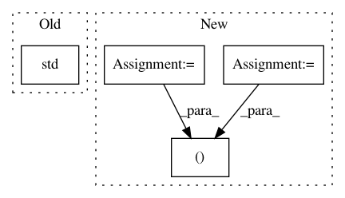

647580b3da745899695341fcbca2ec69eb4df8ef,benchmark/kernel/train_eval.py,,cross_validation_with_val_set,#Any#Any#Any#Any#Any#Any#Any#Any#Any#Any#,13
Before Change
print("Val Loss: {:.4f}, Test Accuracy: {:.3f} ± {:.3f}, Duration: {:.3f}".
format(loss.mean().item(),
acc.mean().item(),
acc.std().item(),
duration.mean().item()))
return loss.mean().item(), acc.mean().item(), acc.std().item()
After Change
loss, argmin = loss.min(dim=1)
accs = accs[torch.arange(folds, dtype=torch.long), argmin]
loss_mean = loss.mean().item()
accs_mean = accs.mean().item()
accs_std = accs.std().item()
print("Val Loss: {:.4f}, Test Accuracy: {:.3f} ± {:.3f}, Duration: {:.3f}".
format(loss_mean,
accs_mean,
accs_std,
duration.mean().item()))
return loss_mean, accs_mean, accs_std
def k_fold(dataset, folds):
In pattern: SUPERPATTERN
Frequency: 3
Non-data size: 4
Instances
Project Name: rusty1s/pytorch_geometric
Commit Name: 647580b3da745899695341fcbca2ec69eb4df8ef
Time: 2019-06-04
Author: ekagra.ranjan@gmail.com
File Name: benchmark/kernel/train_eval.py
Class Name:
Method Name: cross_validation_with_val_set
Project Name: rlworkgroup/garage
Commit Name: 563acaf48cf475f4b125fd32374c6bb566049551
Time: 2019-11-06
Author: 43084978+yonghyuc@users.noreply.github.com
File Name: src/garage/torch/algos/vpg.py
Class Name: VPG
Method Name: process_samples
Project Name: mariogeiger/se3cnn
Commit Name: 165efff251f4545db86e6df2c96ec2ba3e3fd4e3
Time: 2018-06-16
Author: geiger.mario@gmail.com
File Name: se3_cnn/SO3.py
Class Name:
Method Name: _test_spherical_harmonics